❤️ the web for what it is
 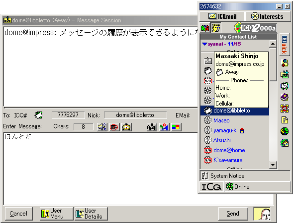
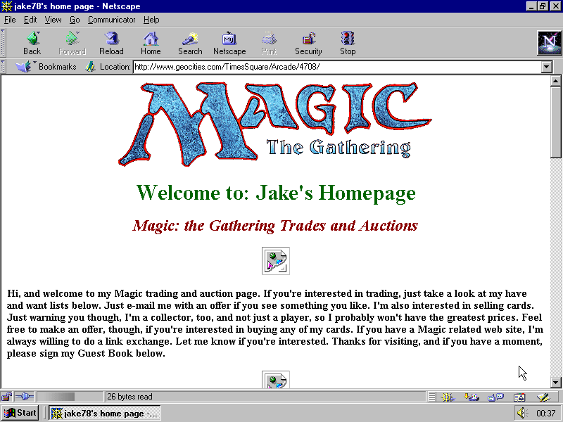
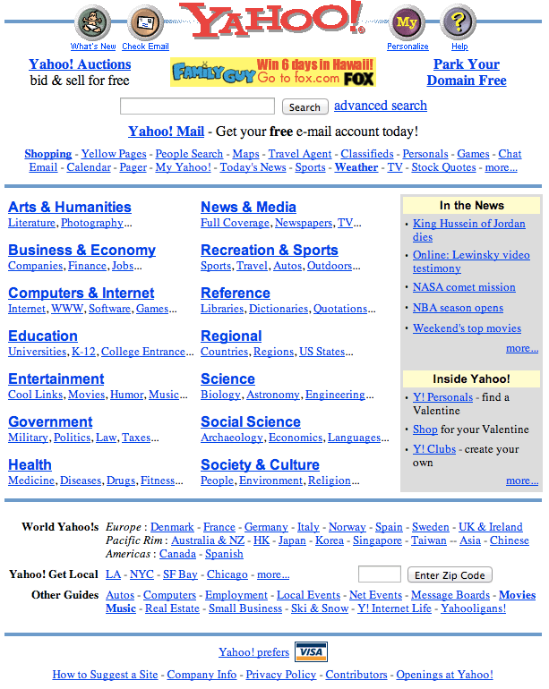
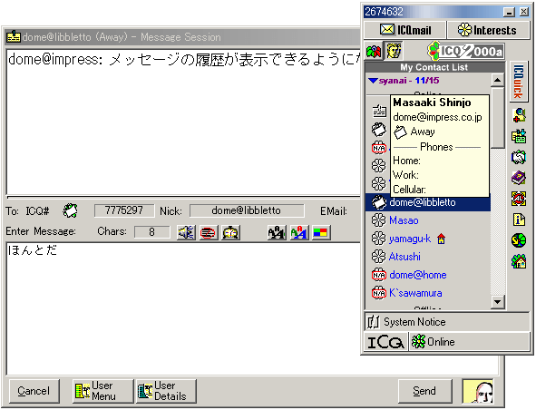
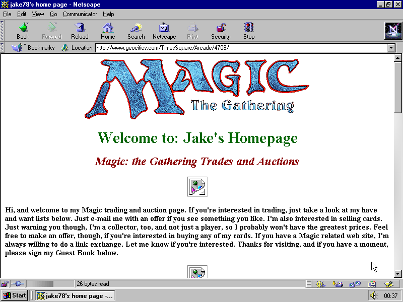
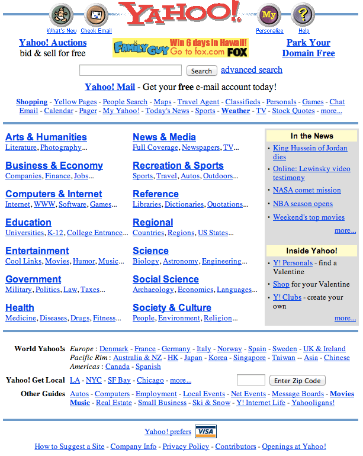

“If you don’t know where you’ve come from, how will you appreciate where you’re going?”
–Shashi Tharoor
Basic building blocks of the web
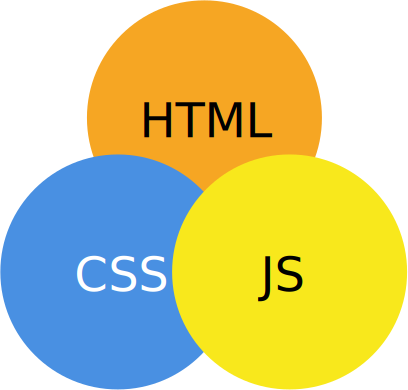HTML (Hypertext Markup Language)
Information Management: A Proposal by Sir Tim Berners-Lee

CSS (Cascading Style Sheets)ss
Cascading HTML style sheets -- a proposal by Håkon Wium Lie

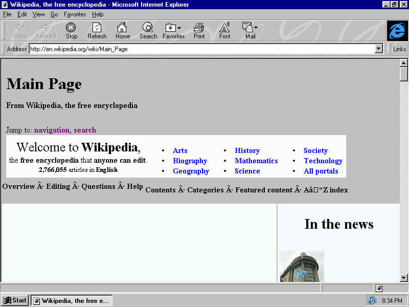
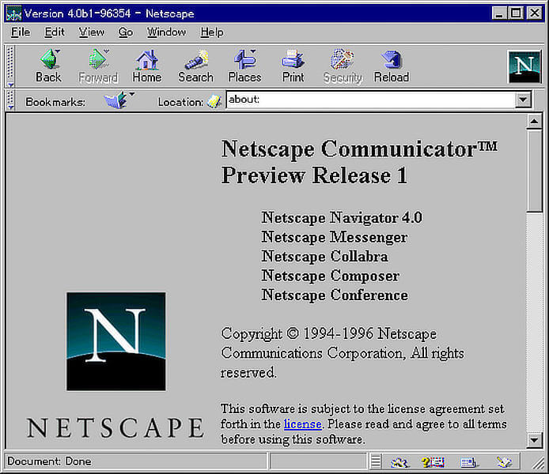
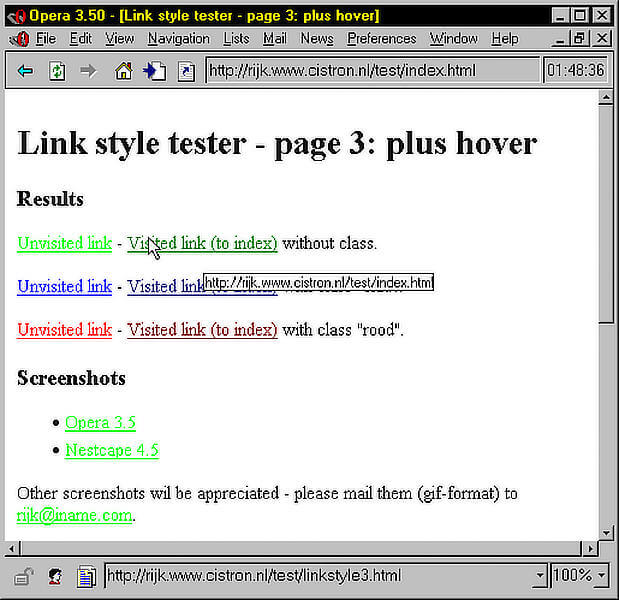
Javascript
The Origin of Javascript with Brendan Eich on the Javascript Jabber podcast


Blue Beanie Day
November 30
“Web standards play an important role when it comes to web accessibility. It is important that websites can be displayed with any browser.”
“The problem lies with designers and developers chained to the browser–quirk–oriented markup of the 1990s—often because they don’t realise it is possible to support current standards while accommodating old browsers.”>
—WaSP (Web Standards Project)
👐 ➡ ✨
👐 ➡ 💻 ➡ ✨
A new normal for the web

and many more...
Embrace feature queries
.selector {
/* Styles that are supported in old browsers */
}
@supports (property:value) {
.selector {
/* Styles for browsers that support the specified property */
}
} 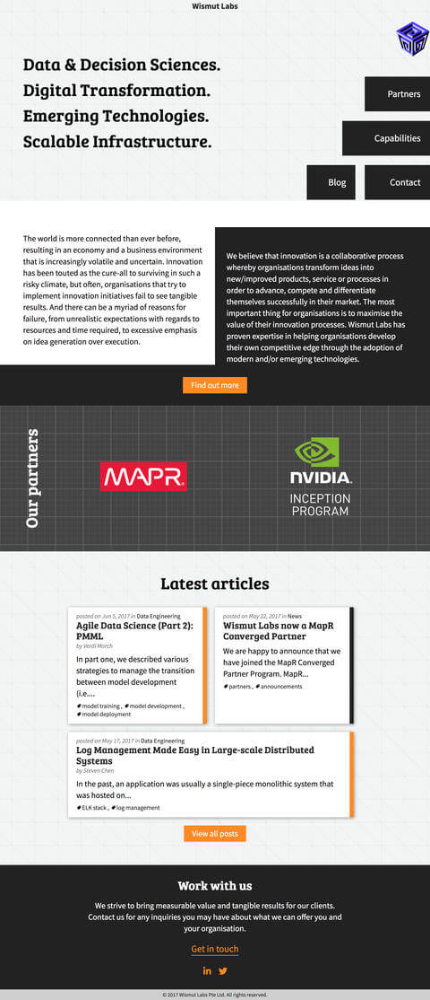
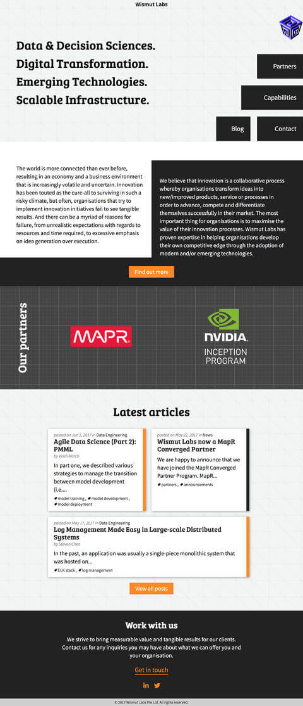

“CSS isn't a programming language. It's a stylesheet language. We shouldn't expect it to behave like a programming language. It has its own unique landscape and structures, ones that people with programming language mental maps might not expect.”
—Danielle Huntrods
“The hardest part is changing our thinking, not our CSS.”
—Jen Simmons
Shape the web we use and build for
- CSS specifications are all on GitHub
- Raising browser bugs can and does make a difference
- Write and talk about CSS features
- Browser developers are people too, provide feedback and be nice about it.
Relevant resources
- Raggett, D., Lam, J., Alexander, I., & Kmiec, M. (1998). Raggett on HTML 4. Harlow: Addison-Wesley.
- Lie, H. W., & Bos, B. (2007). Cascading style sheets designing for the Web. Harlow: Addison-Wesley.
- Zeldman, J., & Marcotte, E. (2010). Designing with Web standards. Berkeley, CA: New Riders.
- A Brief History of JavaScript
- Three challenges for the web, according to its inventor
- Blue Beanie Day
- Mozilla brings Microsoft, Google, the W3C, Samsung together to create cross-browser documentation on MDN
- Cascading Web Design with Feature Queries
- Modern Layouts: Getting Out of Our Ruts by Jen Simmons—An Event Apart video
- There are maps for these territories